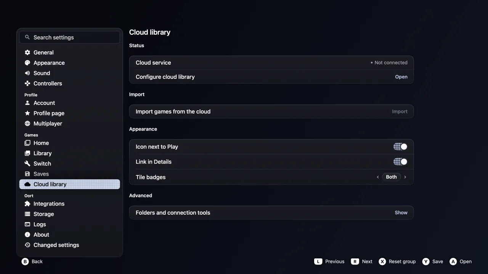
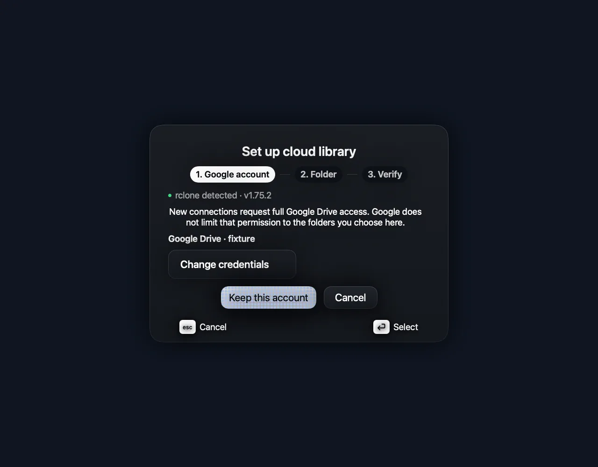
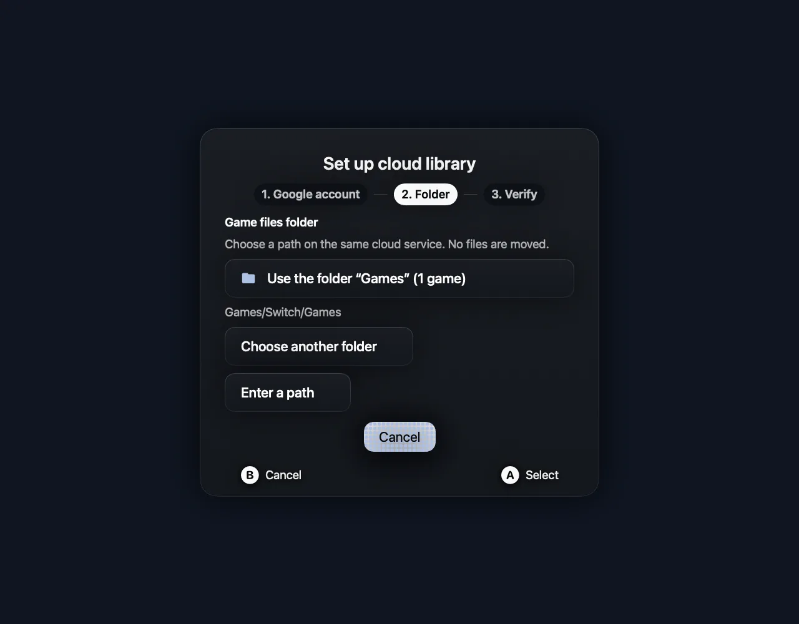
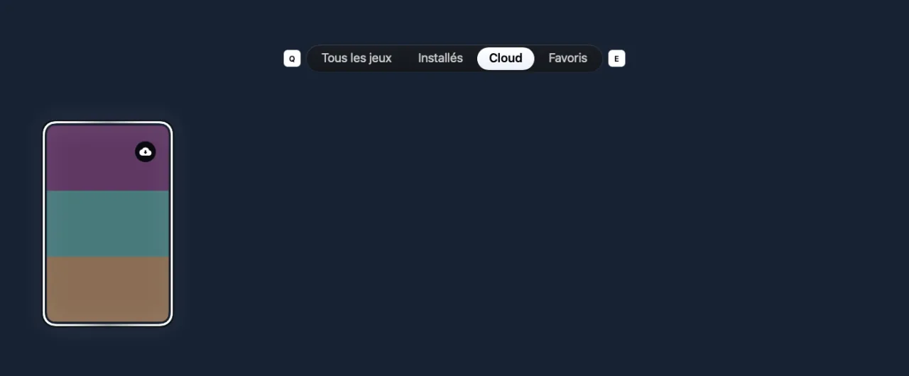

Cloud library (Google Drive)
This guide describes 0.5.0-beta.3. 0.5.0-beta.4 is out since. What changes
- 1
What it is for
Keeping your built games online and finding them on another Mac. Only Google Drive is supported, and your saves are not in it. Keep a copy of what matters.
Read in the code, not tried : Where this comes from

- 2
The tool: rclone
Oort uses the rclone already on your Mac, or asks before taking rclone.org’s. Advanced lets you choose yours.
Read in the code, not tried : Where this comes from
- 3
Connect Google
Keep an existing connection, or Sign in. Google gives rclone access to your whole Drive, not to one folder.
Checked with invented games : Where this comes from

- 4
Choose the folder
Oort looks for a library in
Games, otherwise you give a path. This choice moves nothing.Checked with invented games : Where this comes from

- 5
Download a game
The Cloud tab shows what is online. Download app brings it back; Download game files then asks you to build.
Checked with invented games : Where this comes from

- 6
Unplug
Disconnect removes the connection from this Mac. Files stay in your Drive. Other tools may use that rclone connection.
Read in the code, not tried : Where this comes from


What has been tried
Never tried with a real Google Drive in this version: only against a fake Drive.